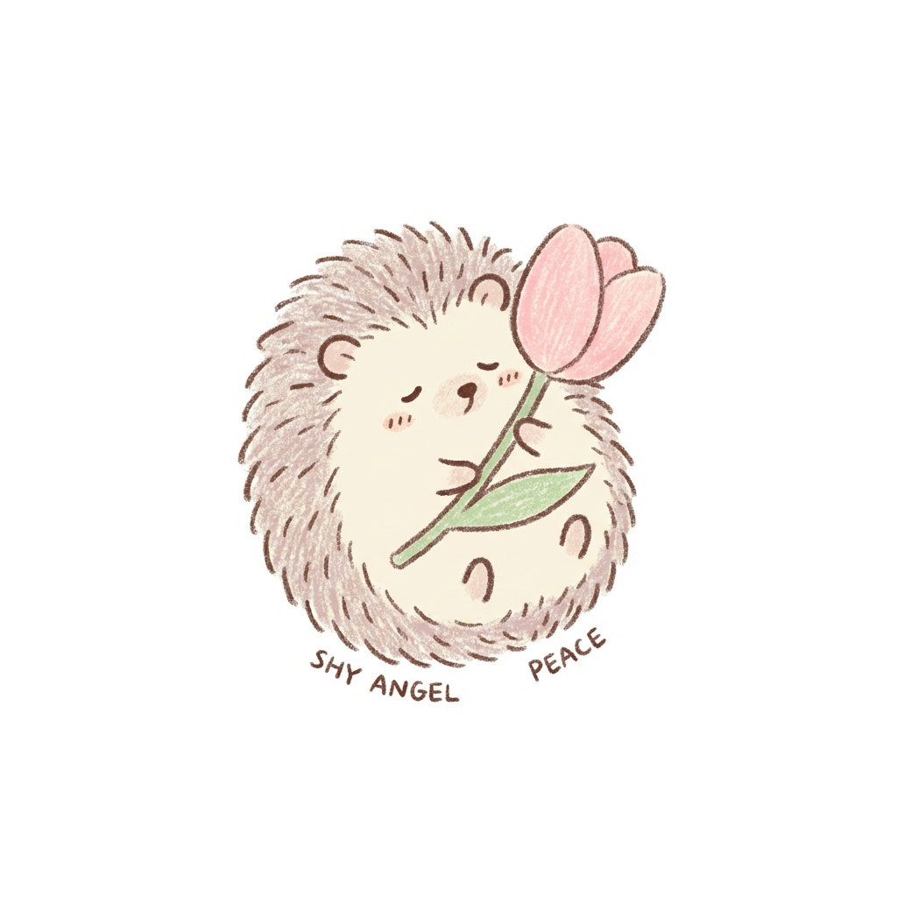
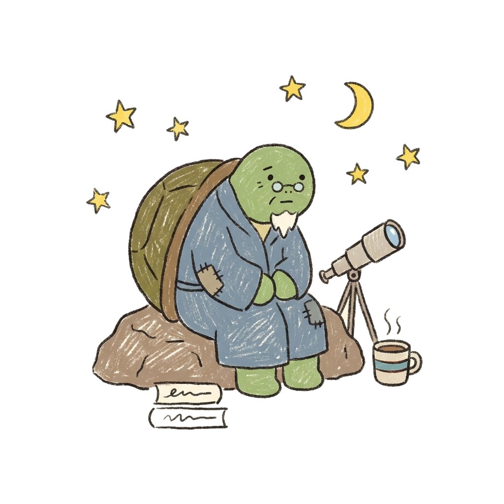
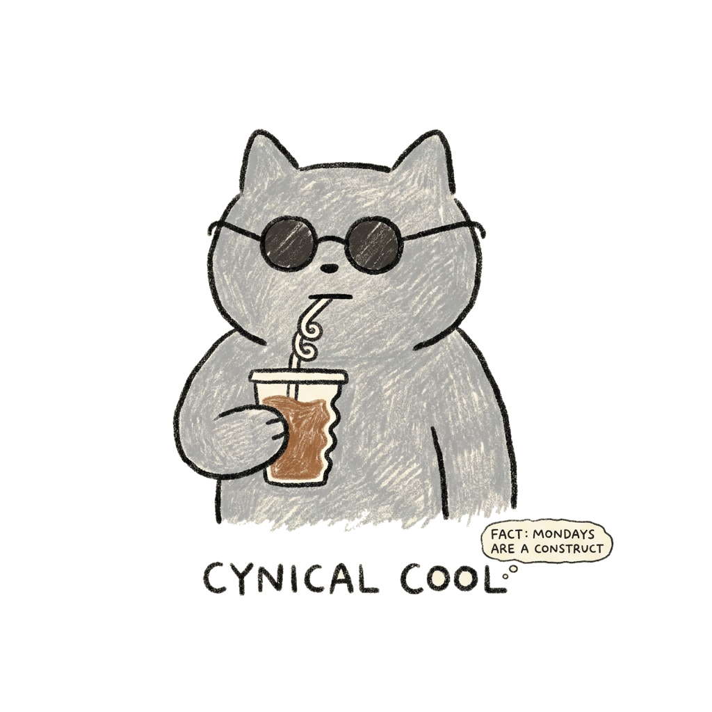
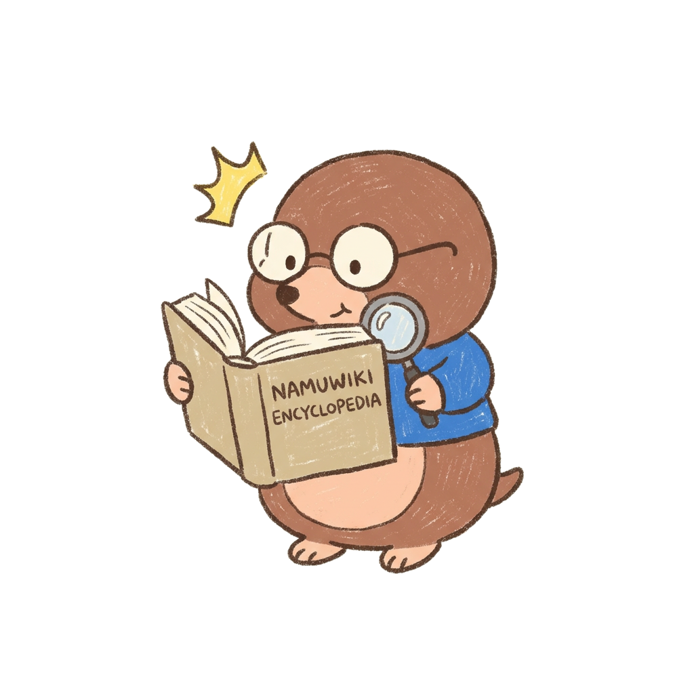
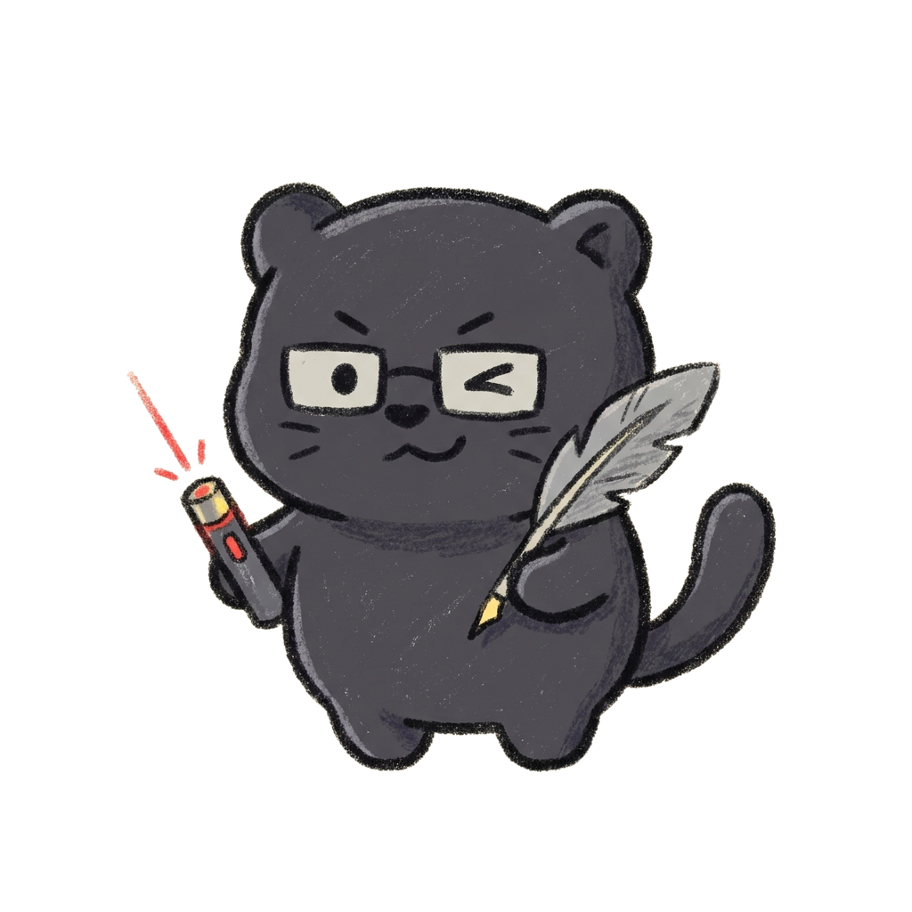

민우(가명)
ELFA
💬 발화량 37.1% • 텐션 폭격상 🏆
"애들아 오늘 진짜 레전드 썰 푼다 ㅋㅋㅋ"
태호(가명)
ESTA
⚡ 평균 답장 1.2분 • 칼답 행동파
"오늘 7시 강남 집합 가능한 사람 손!"

지우(가명)
ISFR
🌿 평화지수 100% • 갈등 제로 수호자
"다들 오늘 하루도 너무 고생 많았어 ㅠㅠ"


정훈 ↔ 상민(가명)
케미 99점
🏆 1:1 최강 영혼의 단짝 (1,420회)
"말 안 해도 통하는 50:50 황금 밸런스"

수현(가명)
ILTA
📚 어휘 다양성 99점 • 팩트 폭격기
"그거 통계 원본 데이터 찾아봤는데 말이야"

도윤(가명)
ISTA
🎯 읽씹 0% • 한 줄 컷 촌철살인
"ㅇㅇ 쌉가능 바로 가자"
● 친구들과 함께 보는 단톡방 채팅 성향 지표
우리 단톡방에서 누가 누구랑 가장 잘 통할까?
1초 만에 확인하는 CTI 팩폭 성적표
카카오톡 대화 텍스트(.txt)를 올리면, 대화량·어휘·질문율·1:1 티키타카를 분석해
16가지 CTI 성향 카드와 1:1 케미 랭킹, 뼈 때리는 팩폭을 도출합니다.
100% 브라우저 로컬 분석 (서버 전송 절대 없음)
SERVER ZERO
회원가입 및 서버 전송 없이, 사용자의 기기 브라우저 메모리 안에서만 1초 만에 안전하게 분석됩니다.
📁 여기에 카톡 파일을 넣어주세요!
카카오톡 대화 내보내기 파일(.txt)을 이곳에 끌어다 놓으세요
또는 아래 버튼을 눌러 내 컴퓨터 / 스마트폰에서 직접 선택하세요
●
CTI 지표
채팅 스타일을 결정짓는 CTI 4대 지표
MBTI처럼 4가지 상반된 대화 성향의 조합으로 성격을 분석합니다
지표 1
Initiative
화제 점화력 (E vs I)
E
Engine (점화형): 정적을 깨고 먼저 화제를 던지며 질문을 쏟아내는 톡방의 엔진
I
Insight (관조형): 흐름을 조용히 관망하다가 필요한 순간에만 툭 등장하는 관찰자
지표 2
Length
텍스트 호흡 (L vs S)
L
Long (서사형): 상세한 묘사, 장문, 사진, 링크를 곁들여 썰을 풍성하게 푸는 이야기꾼
S
Short (단답형): 불필요한 수식어 없이 'ㅇㅇ', 'ㅇㅋ', 단어 위주로 핵심만 던지는 압축파
지표 3
Focus
대화 목적 (F vs T)
F
Feeling (감정·드립형): 일상의 희로애락, 피로감, 자조와 억지 유머를 나누며 감정 교류
T
Task (행동·팩트형): 약속 시간, 장소, 운동, 정산, 현실적 팩트 체크와 실행 최우선
지표 4
Reaction
반응 태도 (R vs A)
R
Receptive (수용·완충형): '아하', '맞지' 등 상대의 말을 유연하게 받아주고 중화시키는 쿠션
A
Assertive (직진·도발형): 거침없는 돌직구, 파괴적 과장과 으름장으로 텐션을 쥐고 흔듦
●
CTI 도감
16가지 CTI 성향 도감 둘러보기
카드를 클릭하면 세부 팩폭과 궁합을 확인할 수 있습니다